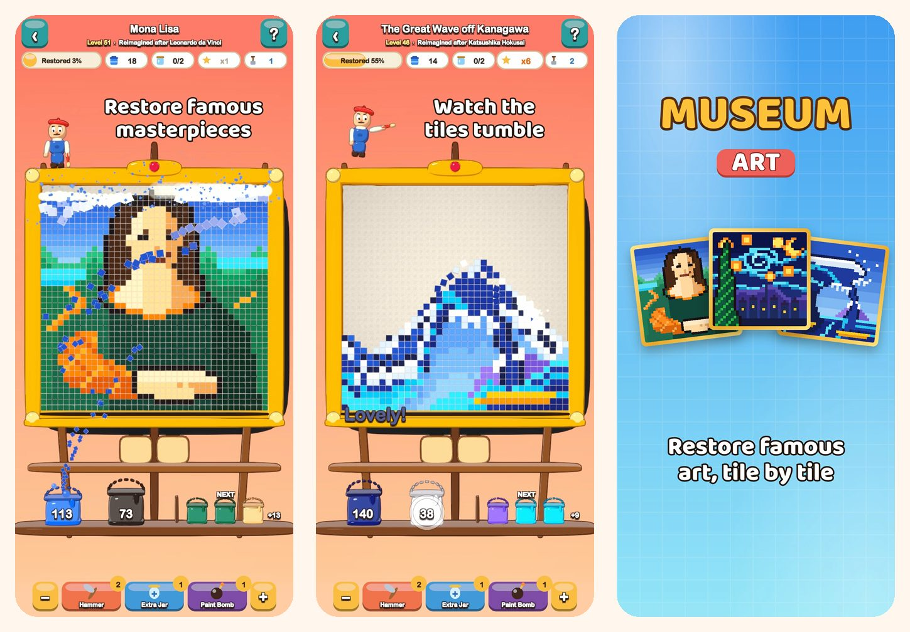

Museum Art
Pixel Art Color Puzzle
Tap a color and watch the tiles tumble. Restore 51 pixel-art pictures, from the Mona Lisa to the streets of Istanbul, Paris, Rome and New York.
Download on the App Store
About the game
Every picture in Museum Art is made of colorful square tiles. Clear them one color at a time and watch the picture shine again.
HOW TO PLAY
- Tap a color patch that touches the bottom row, or tap a bucket on the shelf: the tiles fly into their bucket.
- The tiles above tumble down like sand and open up new moves.
- No bucket for a color yet? Park it in a jar on the waiting tray.
- Use the tray less to earn more stars.
51 PICTURES TO RESTORE
- Bright, easy scenes to begin with: a hot air balloon, a sailboat, a cat and a lighthouse.
- Nature: snowy peaks, a mountain lake, cherry blossoms and a desert at dusk.
- A world tour through Istanbul, Paris, Rome and New York.
- The Masters' Vault: The Great Wave, The Starry Night, Water Lilies, The Milkmaid, Impression, Sunrise and the Mona Lisa, each reimagined as pixel art.
RELAXED AND FAIR
- Every level can be solved without boosters, and retrying is free.
- Boosters for tricky moments: Hammer, Extra Jar and Paint Bomb.
- Zoom in on the details whenever you like.
- A fun fact about every picture, and pictures you will recognize at a glance.
- Play in 19 languages.